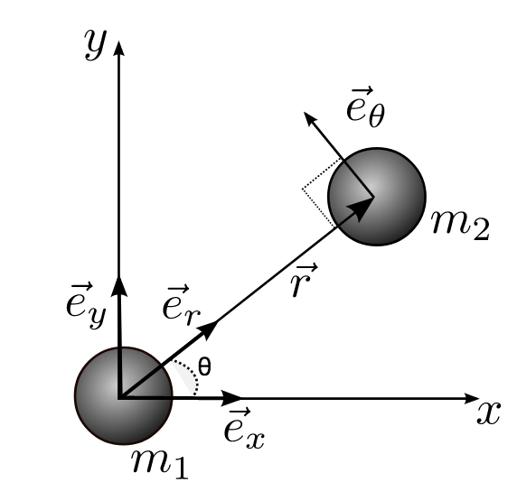

Forrige side🙂 🙁Løse 2-legemeproblemet
For å kunne løse denne likningen, så trenger vi å innføre enhetsvektorer. Det viser seg at det er lettere å jobbe med e⃗r og e⃗θ her! Ta en titt på denne figuren:
 $$\hspace*{-4cm}\ddot{\vec{r}}+m\frac{\vec{r}}{r^3}=0$$
Vi har nå definert origo i sentrum av m1 slik at r⃗ er en posisjonsvektor som peker på m2. Sett inn enhetsvektorer, deriver og dobbeltderiver r⃗ og se om du klarer å komme frem til: (hint: gå baklengs fra dette svaret for å sammenlikne!) $$(\ddot{r}-r\dot{\theta}^2)\vec{e}_r+\frac{1}{r}\frac{d}{dt}(r^2\dot{\theta})\vec{e}_\theta=-\frac{m}{r^2}\vec{e}_r.$$ Flere hint: start fra uttryket for $\dot{\vec{r}}$ og husk at $\dot{\vec{e}}_r = \dot\theta\vec{e}_\theta$ og $\dot{\vec{e}}_\theta = -\dot\theta\vec{e}_r$. Hvis du ikke får det til, ta en titt på denne videoen her
, men kun når du har gjort et skikkelig forsøk selv!. Neste side (Feil i videoen: det står r3 under brøkstreken på høyre side, det skal være r2 som i likningen rett over)